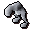
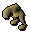

")
Hunter - Tracking (Level 1+)
Tracking
Tracking targets all start from a burrow in the ground, such as the one below, that can be found in each of the four Hunter areas (see Hunter - Locations for more details)

Note: Keep searching - sometimes the next piece of bush, grass, log, etc, may well be quite a way away from the original tracks. If the track loops round to where you started, then search the environment around that area to see where it went to next.
The path will always end with a kebbit hiding area, and a search of the final spot will bring up a message in the chat window.
A warning, however - logging out will cause your tracks to disappear and you will have to start again!
Trapped kebbits will drop kebbit fur, ideal for fashioning into camouflaged Hunter clothing! This clothing will aid you specifically in those areas where the animal-skin was gleaned. A polar kebbit, tracked in polar regions, will increase your chance of Hunter success with certain trap methods in polar regions, for example, when made into camo-gear. A full-set of polar-camouflage clothing will increase that chance even further! (See the Hunter - Equipment page for more information on making these).
Locations
For maps and detailed locations of the tracking creatures for Hunter, visit the Hunter - Locations page.
Tracking creatures can be found at each of the main Hunter areas around RuneScape: polar kebbits at the Rellekka and Trollweiss Hunter area, north of Rellekka; the common kebbit and razorbacked kebbit at the Piscatoris Hunter area, just north of the Gnome Stronghold; the feldip weasel in the Feldip Jungle, just south of the Feldip Hills and Gu'Tanoth; and the Desert devil, who takes up residence in the Uzer Hunter area, just south-east of the Shantay Pass. The penguin can only be tracked if you have completed Hunt for Red Raktuber, and only on the Iceberg Hunter area.
Creatures
Creature |
Hunter Level Required |
Experience Gained |
Hunter reward |
Notes |
Location |
|  Polar kebbit |
1 |
30 | Bones, raw beast meat, polar kebbit fur | Can be made into camo-gear. | Trollweiss and Rellekka Hunter Area |
![[image]](../../img/main/kbase/skills/hunter/npcs/commonkebbit.gif) Common kebbit |
3 |
36 | Bones, raw beast meat, common kebbit fur | Can be made into camo-gear. | Piscatoris Hunter area |
![[image]](../../img/main/kbase/skills/hunter/npcs/feldipweasel.gif) Feldip weasel |
7 |
48 | Bones, raw beast meat, Feldip weasel fur | Can be made into camo-gear. | Feldip Hunter area |
|  Desert devil |
13 |
66 | Bones, raw beast meat, desert devil fur | Can be made into camo-gear. | Uzer Hunter area |
![[image]](../../img/main/kbase/skills/hunter/npcs/penguin.gif) Penguin (polar) |
45 |
250 | Penguin | KGP agents can be handed over to Jim the polar bear for extra experience. | Iceberg Hunter area |
![[image]](../../img/main/kbase/skills/hunter/npcs/razorbackedkebbit.gif) Razorbacked kebbit |
49 |
348 | Bones, long kebbit spike | A kebbit spike can be used to make bolts for the Hunters' Crossbow. | Piscatoris Hunter area |
Creature Rewards
The fur of trackable kebbits can be made into various camouflaged clothing items, which will in turn help you hunt at a higher level, in those areas that match the camouflage. Camo-tops and camo-legs can be made by visiting the fancy-dress shop owner in Varrock, who will gladly create them for a price. When worn, they will help you blend into the scenery a little more, increasing your chance of catching creatures with 'place and wait' traps - box traps, net traps, deadfall and bird snares. A full set of that camo-gear will increase your chances even further!
| Item | Levels Required |
||||||||||||||||||
| Attack Bonuses | Defence Bonuses | Other | |||||||||||||||||
![[Image: Stab]](../../img/main/kbase/table_text/stab1.gif "Stab") |
![[Image: Slash]](../../img/main/kbase/table_text/slash1.gif "Slash") |
![[Image: Crush]](../../img/main/kbase/table_text/crush1.gif "Crush") |
![[Image: Magic]](../../img/main/kbase/table_text/magic1.gif "Magic") |
![[Image: Range]](../../img/main/kbase/table_text/range1.gif "Range") |
|
|
|
|
|
![[Image: Summoning]](../../img/main/kbase/table_text/summoning1.gif "Summoning") |
![[Image: Strength]](../../img/main/kbase/table_text/strength1.gif "strength") |
![[Image: Prayer]](../../img/main/kbase/table_text/prayer1.gif "Prayer") |
|||||||
![[image]](../../img/main/kbase/skills/hunter/items/polarcamotop.gif) Polar camo-top |
1 |
+ 0 | + 0 | + 0 | + 0 | + 0 | + 10 | + 15 | + 19 | + 0 | + 12 | + 5 | + 0 | + 0 | |||||
![[image]](../../img/main/kbase/skills/hunter/items/polarcamolegs.gif) Polar camo-legs |
1 |
+ 0 | + 0 | + 0 | + 0 | - 7 | + 11 | + 10 | + 10 | + 0 | + 10 | + 0 | + 0 | + 0 | |||||
![[image]](../../img/main/kbase/skills/hunter/items/woodcamotop.gif) Wood camo-top |
1 |
+ 0 | + 0 | + 0 | + 0 | + 0 | + 10 | + 15 | + 19 | + 0 | + 12 | + 5 | + 0 | + 0 | |||||
![[image]](../../img/main/kbase/skills/hunter/items/woodcamolegs.gif) Wood camo-legs |
1 |
+ 0 | + 0 | + 0 | + 0 | - 7 | + 11 | + 10 | + 10 | + 0 | + 10 | + 0 | + 0 | + 0 | |||||
![[image]](../../img/main/kbase/skills/hunter/items/junglecamotop.gif) Jungle camo-top |
4 |
+ 0 | + 0 | + 0 | + 0 | + 0 | + 10 | + 15 | + 19 | + 0 | + 12 | + 5 | + 0 | + 0 | |||||
![[image]](../../img/main/kbase/skills/hunter/items/junglecamolegs.gif) Jungle camo-legs |
4 |
+ 0 | + 0 | + 0 | + 0 | - 7 | + 11 | + 10 | + 10 | + 0 | + 10 | + 0 | + 0 | + 0 | |||||
![[image]](../../img/main/kbase/skills/hunter/items/desertcamotop.gif) Desert camo-top |
10 |
+ 0 | + 0 | + 0 | + 0 | + 0 | + 10 | + 15 | + 19 | + 0 | + 12 | + 10 | + 0 | + 0 | |||||
![[image]](../../img/main/kbase/skills/hunter/items/desertcamolegs.gif) Desert camo-legs |
10 |
+ 0 | + 0 | + 0 | + 0 | - 7 | + 11 | + 10 | + 10 | + 0 | + 10 | + 0 | + 0 | + 0 | |||||
The raw beast meat can be spit-roasted on an iron spit and eaten to replenish your life points (see the Food List page for more information).
Additionally the razorbacked kebbit, once you have tracked it at level 49 Hunter, will leave behind the long kebbit spike. This sharp little item can be fashioned into a long kebbit bolt for use with the Hunters' crossbow. For more information, visit the Hunter - Extra Features page.

More articles in
Hunter (Members Only)
|
|